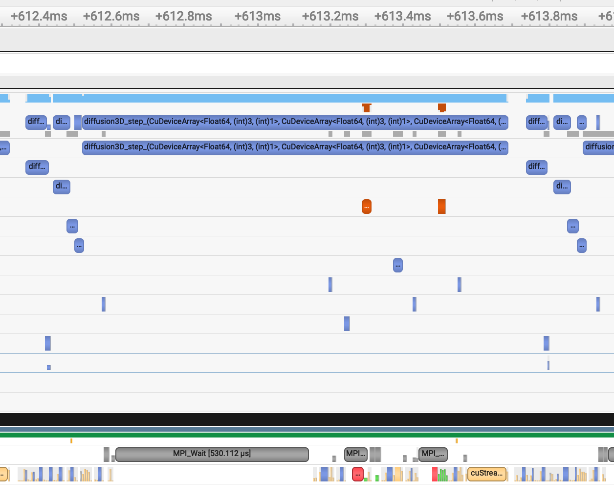
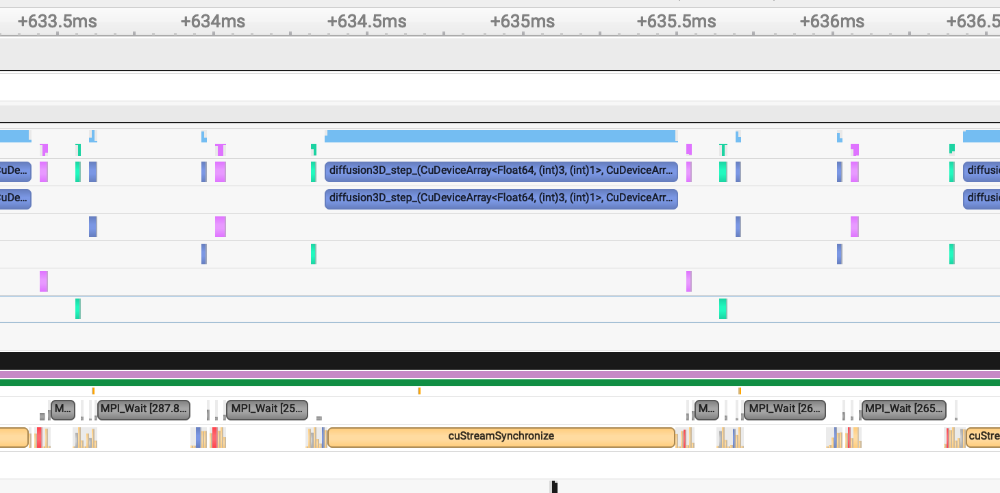

ImplicitGlobalGrid.jl
The goal of this lecture is to become familiar with:
- Distributed computing on several CPUs or GPUs (xPUs) with ImplicitGlobalGrid.jl, combined with ParallelStencil.jl.
- Hiding MPI communication behind computations.
- Documenting your code.
In lecture 7, we wrote a distributed 1D diffusion solver with MPI.jl: we set up a Cartesian grid of processes, computed the global coordinates of the local grid cells, and implemented the halo update by hand. This was a lot of work for a 1D problem, and it would be even more in 2D and 3D, especially with the data on GPUs. In this lecture, we let a package do this work for us.
Distributed computing with ImplicitGlobalGrid.jl
👉 Have a look at the documentation of ImplicitGlobalGrid.jl.
ImplicitGlobalGrid.jl makes distributed parallelisation on CPUs and GPUs a very simple task. It implements the implicit global grid approach that we introduced in lecture 7: it sets up the grid of processes, provides the global coordinates and the global grid size, and performs the halo updates in 1D, 2D and 3D, for CPU and GPU arrays. Moreover, ImplicitGlobalGrid.jl combines elegantly with ParallelStencil.jl, which we used in lecture 6.
Finally, the best part: using both packages together enables us to hide communication behind computation. This feature makes it possible to reach a parallel efficiency close to 1, as shown in the weak scaling figure of lecture 7.
👉 On your computer and on daint, create a folder for this lecture, make it a Julia project, and add the packages ImplicitGlobalGrid, ParallelStencil, MPI, CairoMakie and JLD2, as well as CUDA on daint.
A 2D diffusion solver on a single xPU
We will distribute the explicit solver for the diffusion equation from lecture 2, which we extend to 2D. In the domain \([0, l_x] \times [0, l_y]\), the diffusion equation in conservation form reads:
where \(c\) is the concentration, and \(\lambda\) the diffusion coefficient. As in lecture 2, the concentration is called C, and the diffusion coefficient dc in the code. We use the same parameters as in lecture 2, lx = ly = 20.0 and dc = 1.0, and a Gaussian anomaly in the centre of the domain as the initial condition:
The concentration at the boundaries of the domain keeps its initial value. In 2D, the explicit Euler scheme is stable for \(\Delta t \le \min(\Delta x, \Delta y)^2 / (4\lambda)\), half the time step of 1D. We divide by 4.1 instead of 4 for a small safety margin.
The kernel update_C! is written with @parallel_indices, like the fused residual kernel of lecture 6: it computes the fluxes across the four faces of each inner grid cell on the fly, without storing them in arrays. The kernel writes the new concentration to a second array, C2: if it updated C in place, some threads could read the values of their neighbours after those were already updated. After each time step, we swap the two arrays with a pointer swap, which doesn’t copy any data. The solver thus reads one array and writes one array per time step, and \(A_\mathrm{eff}\) counts 2 arrays.
👉 Copy the following script to a file diffusion_2d_xpu.jl, and run it on your computer with USE_GPU = false and several threads. It saves an animation of the solution to the file diffusion_2d_xpu.mp4, and returns the final concentration, copied to the CPU.
# Linear 2D diffusion on a single xPU
const USE_GPU = false
@static if USE_GPU
using CUDA
end
using ParallelStencil
@static if USE_GPU
@init_parallel_stencil(CUDA, Float64, 2, inbounds=false)
else
@init_parallel_stencil(Threads, Float64, 2, inbounds=false)
end
using CairoMakie
using Printf
@parallel_indices (ix, iy) function update_C!(C2, C, dc, dt, _dx, _dy)
qxW = -dc * (C[ix+1, iy+1] - C[ix , iy+1]) * _dx
qxE = -dc * (C[ix+2, iy+1] - C[ix+1, iy+1]) * _dx
qyS = -dc * (C[ix+1, iy+1] - C[ix+1, iy ]) * _dy
qyN = -dc * (C[ix+1, iy+2] - C[ix+1, iy+1]) * _dy
C2[ix+1, iy+1] = C[ix+1, iy+1] - dt * ((qxE - qxW) * _dx + (qyN - qyS) * _dy)
return
end
@views function diffusion_2d(; nx=126, ny=nx, do_visu=true)
# physics
lx, ly = 20.0, 20.0
dc = 1.0
ttot = 1.0
# numerics
nvis = 5
# preprocessing
dx, dy = lx / nx, ly / ny
xc, yc = LinRange(dx/2, lx-dx/2, nx), LinRange(dy/2, ly-dy/2, ny)
dt = min(dx, dy)^2 / dc / 4.1
nt = ceil(Int, ttot / dt)
_dx, _dy = 1.0 / dx, 1.0 / dy
# array initialisation
C = Data.Array([exp(-(x - lx/2)^2 - (y - ly/2)^2) for x in xc, y in yc])
C2 = copy(C)
# create plot
if do_visu
fig = Figure(size=(500, 400))
ax = Axis(fig[1,1]; aspect=DataAspect(), xlabel="x", ylabel="y", title="time = 0.00")
plt = heatmap!(ax, xc, yc, Array(C); colormap=:turbo, colorrange=(0, 1))
Colorbar(fig[1,2], plt)
io = VideoStream(fig; framerate=10)
end
# time loop
t_tic = 0.0
for it = 1:nt
# start the timer after 10 warm-up iterations
if (it == 11) t_tic = Base.time() end
@parallel (1:nx-2, 1:ny-2) update_C!(C2, C, dc, dt, _dx, _dy)
C, C2 = C2, C # pointer swap
# visualisation
if do_visu && it % nvis == 0
plt[3] = Array(C)
ax.title = @sprintf("time = %1.2f", it * dt)
recordframe!(io)
end
end
# performance
t_toc = Base.time() - t_tic
t_it = t_toc / (nt - 10) # execution time per iteration [s]
A_eff = 2 * nx * ny * sizeof(Float64) / 1e9 # effective main memory access per iteration [GB]
T_eff = A_eff / t_it # effective memory throughput [GB/s]
@printf("Time = %1.3e s, T_eff = %1.2f GB/s (nt = %d)\n", t_toc, T_eff, nt)
do_visu && save("diffusion_2d_xpu.mp4", io)
return Array(C)
end
C = diffusion_2d()
Unlike in lecture 2, we prescribe the total simulation time ttot instead of the number of time steps nt. This way, the solver always computes the solution at the same physical time, whichever the resolution.
Performance measurements
The visualisation in the time loop copies the solution from the GPU to the CPU, which slows the solver down. Set do_visu=false when you measure \(T_\mathrm{eff}\), and increase the resolution, e.g. to nx = 2^13 on a GH200 of daint.
From a single xPU to multiple xPUs
Only a few changes are required to enable multi-xPU execution with ImplicitGlobalGrid.jl:
- initialise the implicit global grid;
- use global coordinates to compute the initial condition;
- update the halo cells;
- finalise the global grid;
- adapt the visualisation.
1. Initialising the global grid
To initialise the global grid, we first need to load the package, after loading the backend package. ImplicitGlobalGrid.jl uses MPI.jl for the communication:
using ImplicitGlobalGrid
import MPI
Then, we initialise the global grid in the # preprocessing section:
me, dims = init_global_grid(nx, ny, 1; select_device=false) # initialise MPI and the global grid
dx, dy = lx / nx_g(), ly / ny_g()
The function init_global_grid takes the size of the local grid, nx × ny × 1 in 2D. It initialises MPI, and creates a Cartesian grid of processes with the dimensions dims, as we did by hand in lecture 7. It returns the rank of the process me, and dims. By default, neighbouring local grids overlap by 2 cells, as in lecture 7. The functions nx_g() and ny_g() return the size of the global grid, e.g. nx_g() = dims[1] * (nx - 2) + 2, which we use to compute the grid spacing.
Device selection on Alps
On a node of daint, SLURM makes a single GPU, with ID 0, visible to every MPI process. Therefore, the automatic selection of the GPU by ImplicitGlobalGrid.jl must be deactivated with select_device=false. See the section Julia MPI GPU on Alps of the Software installation page for details on how to run multi-GPU applications on daint.
2. Global coordinates
To spread the Gaussian anomaly correctly over all local domains, we compute the initial condition from the global coordinates of the local grid cells. The function x_g(ix, dx, A) returns the global coordinate of the element ix of the local array A, with the coordinate of the first element of the global array being 0. Since our grid cells start at dx/2, we shift the coordinates by half a grid cell:
C = @zeros(nx, ny)
C .= Data.Array([exp(-(x_g(ix, dx, C) + dx/2 - lx/2)^2 - (y_g(iy, dy, C) + dy/2 - ly/2)^2) for ix = 1:nx, iy = 1:ny])
3. Halo update
The halo update is performed by a single function call after the kernel, which updates the halo cells of the array C2 that the kernel has just computed:
@parallel (1:nx-2, 1:ny-2) update_C!(C2, C, dc, dt, _dx, _dy)
update_halo!(C2)
update_halo! exchanges the halo cells with all neighbouring processes. It works with both CPU and GPU arrays, and can update several arrays at once, e.g. update_halo!(A, B).
4. Finalising the global grid
To finalise the global grid, and MPI, the following call is needed before the return of the main function:
finalize_global_grid()
5. Visualisation
The last change concerns the visualisation, where several approaches are possible:
- Each process saves the results of its local domain to a file, with the rank
mein the filename, and a separate post-processing script assembles the global solution, as we did in lecture 7. For large simulations, libraries such as ADIOS2 can help. - The local results are gathered into a global array on a single process, the root process, which then plots and/or saves them.
To implement the second approach, we define a global array for the visualisation. Since neighbouring local arrays overlap by 2 cells, gathering the inner cells of all local arrays gives exactly the inner cells of the global grid, without duplicates. Only the root process me == 0 needs the global array:
nx_v, ny_v = (nx - 2) * dims[1], (ny - 2) * dims[2]
C_inn = zeros(nx - 2, ny - 2) # local array without halo cells
C_v = me == 0 ? zeros(nx_v, ny_v) : nothing # global array
xi_g = LinRange(dx + dx/2, lx - dx - dx/2, nx_v)
yi_g = LinRange(dy + dy/2, ly - dy - dy/2, ny_v)
The coordinates xi_g and yi_g are the global coordinates of the inner cells. Then, the function gather! collects the inner cells of all local arrays into the global array C_v on the root process. All processes have to call gather!, but only the root process plots C_v:
C_inn .= Array(C)[2:end-1, 2:end-1]; gather!(C_inn, C_v)
if me == 0
plt[3] = C_v
# ...
end
The figure and the video stream must also only be created and saved by the root process. Similarly, the performance should be printed by the root process only.
Putting it all together
👉 Duplicate diffusion_2d_xpu.jl, and rename the copy to diffusion_2d_multixpu.jl. Implement the steps 1–5 to make the solver run on multiple xPUs, with the default local resolution nx = ny = 64. Additionally, gather the final concentration into C_v, and save it from the root process to a file diffusion_2d_multixpu.jld2 with JLD2:
using JLD2
# ...
if (me == 0) jldsave("diffusion_2d_multixpu.jld2"; C_v) end
👉 Run the script on your computer, still with USE_GPU = false, with 1 and 4 processes:
mpiexecjl -n 4 julia --project diffusion_2d_multixpu.jl
Want to see the answer?
Answer
# Linear 2D diffusion on multiple xPUs
const USE_GPU = false
@static if USE_GPU
using CUDA
end
using ParallelStencil
using ImplicitGlobalGrid
import MPI
@static if USE_GPU
@init_parallel_stencil(CUDA, Float64, 2, inbounds=false)
else
@init_parallel_stencil(Threads, Float64, 2, inbounds=false)
end
using CairoMakie
using Printf
using JLD2
@parallel_indices (ix, iy) function update_C!(C2, C, dc, dt, _dx, _dy)
qxW = -dc * (C[ix+1, iy+1] - C[ix , iy+1]) * _dx
qxE = -dc * (C[ix+2, iy+1] - C[ix+1, iy+1]) * _dx
qyS = -dc * (C[ix+1, iy+1] - C[ix+1, iy ]) * _dy
qyN = -dc * (C[ix+1, iy+2] - C[ix+1, iy+1]) * _dy
C2[ix+1, iy+1] = C[ix+1, iy+1] - dt * ((qxE - qxW) * _dx + (qyN - qyS) * _dy)
return
end
@views function diffusion_2d(; nx=64, ny=nx, do_visu=true, do_save=true)
# physics
lx, ly = 20.0, 20.0
dc = 1.0
ttot = 1.0
# numerics
nvis = 5
# preprocessing
me, dims = init_global_grid(nx, ny, 1; select_device=false) # initialise MPI and the global grid
dx, dy = lx / nx_g(), ly / ny_g()
dt = min(dx, dy)^2 / dc / 4.1
nt = ceil(Int, ttot / dt)
_dx, _dy = 1.0 / dx, 1.0 / dy
# array initialisation
C = @zeros(nx, ny)
C .= Data.Array([exp(-(x_g(ix, dx, C) + dx/2 - lx/2)^2 - (y_g(iy, dy, C) + dy/2 - ly/2)^2) for ix = 1:nx, iy = 1:ny])
C2 = copy(C)
# global array of the inner grid cells, on the root process only
if do_visu || do_save
nx_v, ny_v = (nx - 2) * dims[1], (ny - 2) * dims[2]
C_inn = zeros(nx - 2, ny - 2) # local array without halo cells
C_v = me == 0 ? zeros(nx_v, ny_v) : nothing # global array
xi_g = LinRange(dx + dx/2, lx - dx - dx/2, nx_v)
yi_g = LinRange(dy + dy/2, ly - dy - dy/2, ny_v)
end
# create plot
if do_visu
C_inn .= Array(C)[2:end-1, 2:end-1]; gather!(C_inn, C_v)
if me == 0
fig = Figure(size=(500, 400))
ax = Axis(fig[1,1]; aspect=DataAspect(), xlabel="x", ylabel="y", title="time = 0.00")
plt = heatmap!(ax, xi_g, yi_g, C_v; colormap=:turbo, colorrange=(0, 1))
Colorbar(fig[1,2], plt)
io = VideoStream(fig; framerate=10)
end
end
# time loop
t_tic = 0.0
for it = 1:nt
# start the timer after 10 warm-up iterations
if (it == 11) t_tic = Base.time() end
@parallel (1:nx-2, 1:ny-2) update_C!(C2, C, dc, dt, _dx, _dy)
update_halo!(C2)
C, C2 = C2, C # pointer swap
# visualisation
if do_visu && it % nvis == 0
C_inn .= Array(C)[2:end-1, 2:end-1]; gather!(C_inn, C_v)
if me == 0
plt[3] = C_v
ax.title = @sprintf("time = %1.2f", it * dt)
recordframe!(io)
end
end
end
# performance
t_toc = Base.time() - t_tic
t_it = t_toc / (nt - 10) # execution time per iteration [s]
A_eff = 2 * nx * ny * sizeof(Float64) / 1e9 # effective main memory access per iteration [GB]
T_eff = A_eff / t_it # effective memory throughput [GB/s]
if (me == 0) @printf("Time = %1.3e s, T_eff = %1.2f GB/s (nt = %d)\n", t_toc, T_eff, nt) end
if (do_visu && me == 0) save("diffusion_2d_multixpu.mp4", io) end
# save the global array
if do_save
C_inn .= Array(C)[2:end-1, 2:end-1]; gather!(C_inn, C_v)
if (me == 0) jldsave("diffusion_2d_multixpu.jld2"; C_v) end
end
finalize_global_grid()
return
end
diffusion_2d()
With 4 processes, init_global_grid arranges the processes on a 2 × 2 grid, and prints:
Global grid: 126x126x1 (nprocs: 4, dims: 2x2x1; device support: none)
The solution looks as follows:
Checking the results
Before we run the multi-xPU solver on many GPUs, we make sure that it produces the same results as the single-xPU solver.
👉 Which resolution nx must the single-xPU solver use to compute the same solution as the multi-xPU solver on 4 processes with nx = 64? Run diffusion_2d_xpu.jl with this resolution in the REPL, load C_v from the file diffusion_2d_multixpu.jld2, and compute the maximum difference between both solutions.
Want to see the answer?
Answer
On a 2 × 2 grid of processes, the global grid has nx_g = 2 * (64 - 2) + 2 = 126 cells in each direction, which is the default resolution of diffusion_2d_xpu.jl. The global array C_v only contains the inner cells, so we compare it with C[2:end-1, 2:end-1]:
julia> include("diffusion_2d_xpu.jl");
julia> using JLD2
julia> C_v = load("diffusion_2d_multixpu.jld2", "C_v");
julia> maximum(abs.(C_v .- C[2:end-1, 2:end-1]))
8.326672684688674e-17
Both solutions agree to machine precision. The tiny difference comes from rounding errors in the computation of the coordinates for the initial condition.
👉 On daint, set USE_GPU = true, and run both solvers on GPUs: diffusion_2d_xpu.jl on 1 GPU, and diffusion_2d_multixpu.jl on 4 GPUs. Confirm that the solutions are the same as on the CPU. When using ImplicitGlobalGrid.jl, export IGG_CUDAAWARE_MPI=1 in addition to MPICH_GPU_SUPPORT_ENABLED=1:
MPICH_GPU_SUPPORT_ENABLED=1 IGG_CUDAAWARE_MPI=1 srun -N1 -n4 --ntasks-per-node=4 --gpus-per-task=1 julia --project diffusion_2d_multixpu.jl
CUDA-aware MPI
With IGG_CUDAAWARE_MPI=1, ImplicitGlobalGrid.jl passes the GPU arrays directly to MPI, which transfers the data from GPU to GPU without a detour through the host memory. Note that the codes using ImplicitGlobalGrid.jl also work with USE_GPU = false. However, the overlap of communication and computation, which we discuss next, is not available on CPUs, as its implementation currently relies on GPU streams.
Hiding communication
Hiding communication behind computation is a common optimisation technique in distributed stencil computing.
You can think of each MPI process as a watermelon, with a thin green crust around a big red inside:
- We first compute the updates in the boundary region (the crust), and then directly start the non-blocking MPI communication (
MPI.IsendandMPI.Irecv!) of the halo cells. - In the meantime, we compute the updates in the inner region (the red part), asynchronously.
The aim is to hide the communication of step 1 behind the computation of step 2. This is possible because the inner region doesn’t depend on the halo cells: the halo cells are only needed in the next time step.
With ParallelStencil.jl and ImplicitGlobalGrid.jl, this optimisation only requires wrapping the computation and the halo update in the macro @hide_communication:
@hide_communication (8, 2) begin
@parallel (1:nx-2, 1:ny-2) update_C!(C2, C, dc, dt, _dx, _dy)
update_halo!(C2)
end
C, C2 = C2, C # pointer swap
The tuple (8, 2) is the width of the boundary region in the x and y directions. @hide_communication first computes the first and last 8 grid cells in the x direction, and the first and last 2 grid cells in the y direction, on high-priority GPU streams. Then, it starts the halo update, and in the meantime computes the remaining inner region of the local domain on other GPU streams. The boundary region must include all the data that is accessed by the communication, here the first and the last computed cells in each direction. The boundary region is wider in the x direction because x is the fastest-varying dimension in memory: a kernel computing a region only 2 cells wide in x would access the memory inefficiently.
Warning
The block of @hide_communication must start with the @parallel call of the computation, followed by the code that sets the boundary conditions and performs the communication. Therefore, the pointer swap must follow after the block.
👉 Add @hide_communication to the time loop of diffusion_2d_multixpu.jl. Run the solver without visualisation, with and without hiding communication, on 4 GPUs of daint, with a local resolution of nx = ny = 2^12. Compare \(T_\mathrm{eff}\) of both versions.
Want to see the answer?
Answer
The time loop becomes:
for it = 1:nt
# start the timer after 10 warm-up iterations
if (it == 11) t_tic = Base.time() end
@hide_communication (8, 2) begin
@parallel (1:nx-2, 1:ny-2) update_C!(C2, C, dc, dt, _dx, _dy)
update_halo!(C2)
end
C, C2 = C2, C # pointer swap
# visualisation
# ...
end
Run the solver with diffusion_2d(; nx=2^12, do_visu=false, do_save=false). The solution doesn’t change: hiding communication only changes the order in which the grid cells are computed. Without hiding communication, the GPUs are idle while they wait for the halo update, and \(T_\mathrm{eff}\) drops compared with a single GPU. With hidden communication, \(T_\mathrm{eff}\) on 4 GPUs stays close to \(T_\mathrm{eff}\) on a single GPU, as long as the computation of the inner region takes longer than the communication. The benefit grows with the cost of the communication, e.g. when the processes communicate across several nodes.
Profiling
We can examine the effect of hiding communication by looking at the profiler traces of a 3D diffusion solver, which ran on 8 GPUs of daint under the NVIDIA Nsight Systems profiler.
With hidden communication, the kernels of the boundary regions run first, and the MPI communication (MPI_Wait) overlaps with the kernel of the inner region, which runs in parallel on another stream:

With the naive implementation, without hiding communication, the GPU is idle during the MPI communication:

Wrapping up
- ImplicitGlobalGrid.jl implements the implicit global grid approach:
init_global_gridsets up the grid of processes,nx_g(),x_g()and similar functions give access to the global grid, andupdate_halo!updates the halo cells of CPU and GPU arrays. - Only a few changes turn a single-xPU ParallelStencil.jl solver into a multi-xPU solver.
gather!collects the local results on the root process, e.g. for visualisation. - Before scaling up, compare the multi-xPU results with the single-xPU results on an equivalent global grid.
@hide_communicationoverlaps the halo update with the computation of the inner region, which keeps the parallel efficiency close to 1.
Documenting your code
In this part, we will learn about:
- documentation vs. code comments;
- why we should write documentation;
- GitHub tools: rendering of Markdown files;
- Julia tools:
- docstrings;
- Literate.jl;
- Documenter.jl.

Comic: xkcd 1421, “Future Self” by Randall Munroe, CC BY-NC 2.5.
Why should I document my code?
Why should I write code comments?
- “Code Tells You How, Comments Tell You Why”:
- the code itself should be as understandable as possible;
- the comments should then tell “why” you’re doing something.
- But comments are also useful to structure the code, e.g.
# physics,# numericsand# time loopin our solvers. - Mathematical variables tend to have short names, which need a comment, e.g.
dcfor the diffusion coefficient.
Why should I write documentation?
- Documentation gives a bigger overview of what your code does:
- at the function level (docstrings);
- at the package level (README, full-fledged documentation).
- It lets other people, and, probably most importantly, your future self understand what your code is about.
Documentation easily rots…
Worse than no documentation or code comments is documentation that is outdated.
The best ways to keep documentation up to date are:
- keep the documentation visible to you, e.g. in the GitHub README;
- document what you need yourself;
- use examples, and run them as part of CI (doctests, example scripts).
Documentation tools
Docstrings
A Julia docstring (Julia manual):
- is just a string right before the object, without a blank line in between, which is interpreted as Markdown;
- can be attached to most things: functions, variables, modules, macros, types;
- can be queried with
?in the REPL.
"Typical size of a beer crate"
const BEERBOX = 12
help?> BEERBOX
Typical size of a beer crate
Docstrings can contain examples, which can even be part of the tests (doctests). To write an example, run it in the REPL, and copy and paste the input and the output into the docstring:
"""
transform(r, θ)
Transform polar coordinates `(r, θ)` to Cartesian coordinates `(x, y)`.
# Examples
```jldoctest
julia> transform(4.5, pi/5)
(3.6405764746872635, 2.6450336353161292)
```
"""
transform(r, θ) = (r*cos(θ), r*sin(θ))
help?> transform
transform(r, θ)
Transform polar coordinates (r, θ) to Cartesian coordinates (x, y).
Examples
≡≡≡≡≡≡≡≡
julia> transform(4.5, pi/5)
(3.6405764746872635, 2.6450336353161292)
GitHub Markdown rendering
The easiest way to write long-form documentation is to use GitHub’s Markdown rendering, e.g. in the README.md file of a repository.
A nice example is this short course by Ludovic Räss (incidentally about solving PDEs on GPUs 🙂):
- images are rendered;
- in-page links are easy to write, e.g.
[_back to workshop material_](#workshop-material); - the outline button at the top right of the file view gives access to the table of contents;
- the files can be edited directly on the web page (pencil icon).
👉 This is a good and low-overhead way to produce pretty nice documentation.
Literate.jl
Several tools render .jl files, with special formatting, into Markdown files. These files can then be added to GitHub, which renders them.
- One solution is to use Literate.jl, whose file format is described here.
- The files remain valid Julia scripts, i.e. they can be executed without Literate.jl.
For example, the Julia script scripts/car_travels.jl of the repository course-101-0250-00-L8Documentation.jl is rendered into the Markdown file scripts/car_travels.md with:
Literate.markdown("car_travels.jl", directory_of_this_file, execute=true, documenter=false, credit=false)
However, this is not automatic: after every change, we have to run Literate.jl, add the files, commit and push… or use GitHub Actions!
Automating Literate.jl
The repository course-101-0250-00-L8Documentation.jl demonstrates how to run Literate.jl with GitHub Actions, which we introduced in lecture 6, on every push:
name: Run Literate.jl
# adapted from https://lannonbr.com/blog/2019-12-09-git-commit-in-actions
on: push
permissions:
contents: write # allow the workflow to push the generated files
jobs:
lit:
runs-on: ubuntu-latest
steps:
# check out the branch
- uses: actions/checkout@v7
- uses: julia-actions/setup-julia@v3
with:
version: "1.12"
- uses: julia-actions/cache@v3
- uses: julia-actions/julia-buildpkg@v1
- name: run Literate
run: julia --color=yes --project -e 'cd("scripts"); include("literate-script.jl")'
- name: set up git config
run: |
git config user.name "github-actions[bot]"
git config user.email "41898282+github-actions[bot]@users.noreply.github.com"
- name: commit
run: |
# stage the files, commit and push
git add scripts/md/*
git commit -m "Commit Markdown files from Literate"
git push
Documenter.jl
If you want full-blown documentation, including, e.g., automatically generated API documentation and versioning, use Documenter.jl.
Examples:
Notes
- Documenter.jl is geared towards Julia packages, less towards a bunch of scripts as in our lectures.
- Documenter.jl integrates with Literate.jl, and can deploy the documentation to GitHub Pages.
- For more free-form websites, use, e.g., Franklin.jl, or PlutoPages.jl, with which this course website is built.
- If you want to use Documenter.jl, it’s easiest to generate your package with PkgTemplates.jl, which generates the Documenter.jl setup for you.
- We don’t use Documenter.jl in this course.
Wrapping up
- Code comments tell “why”, the code itself tells “how”. Documentation gives an overview of what the code does, at the function level and at the package level.
- Outdated documentation is worse than no documentation: keep it visible, and run the examples as part of CI.
- Docstrings document Julia functions and other objects, and are displayed with
?in the REPL. Literate.jl turns Julia scripts into Markdown, and Documenter.jl builds full-fledged documentation websites for Julia packages.